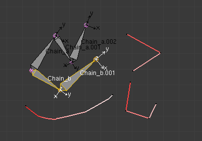

Armature Templating 骨架模板¶
模板化的想法是使用现有的骨架作为基础 （"模板"） 来创建一个新的骨架。它不同于简单的复制，你可以直接定义新的骨架在某些方面不同于其参考的绑定。
在Blender,唯一的模板工具是骨架速绘那个(Etch-a-ton, 前一页所述),其模板 the previous page ） 模板 转换方法 — — 所以你应该在这之前阅读它的页面！
Using Bone Sketching 使用骨骼速绘¶
参考
P骨架素描（Bone Sketching ） 工具 模板 转换方法将现有的骨头副本映射到每个选定的笔画。新骨骼将从模板中的相应骨头继承它们的某些属性 （影响，数段等），但除了他们从速绘将会获得的长度、 滚动和旋转;所以这些属性会不同于模板。
这是容易理解的一些例子。
在下面的图像中，"armature.002" 设置为模板，笔画用这个模板的 "chain_a " 映射的。在模板中没有选择任何骨头。注意在模板的 "chain_a " 没有任何的笔划映射 . 结果如右图所示：Blender 复制 "chain_a " 骨骼和笔划匹配。
Blender 也创造一份"chain_b"副本，但这个链条是不会进行任何方式的改变；因为这个命令只映射笔画选定的链。
在下面的示例中，没有选择模板。（换句话说，所有的动作都在骨架内部。)
选择的两根 "chain_b" 骨骼，和属性面板设置用笔画映射。因此，这两个选定的骨骼被复制，并且新创建的链的副本与笔画匹配。（请注意，新创建的骨骼被命名为原来的链名。)

转换设置。 |

转换前。 |

转换后。 |
如果你选择了两链（"Chain_a" 和 "Chain_b"），你仍会有相同的结果，在上面的例子中，因为命令映射到笔画仅仅在一个选定的链。
在下面的示例中，只有一个链被选中，但有三个笔画映射。在这种情况下，相同的链被复制三次（每一次一笔画），然后映射到单独的笔画。注意二个骨骼链如何适合到三段笔画的。

转换前。 |

转换后。 |
好吧，现在让我们看一些重要的基础规则：
- 此转换方法可以用作参考骨骼或者选定的骨骼在 当前 编辑的骨架，或 所有 骨骼来自从另一骨架。一般情况下，在"参考"骨架创建新的"模板"骨骼是一个更好的主意，以便准确地选择哪些骨头要用作模板 — — 如果你想新的骨骼在一个不同的骨架，你可以然后使用 Separate（分离）
Ctrl-Alt-P命令，或可以选择 Join（加入） (Ctrl-J在对象模式) 命令...... - 这个工具只考虑 一个*的骨骼链，所以最好只选择在当前的骨架的一个骨骼链（或使用一个单一的骨架物体链为模板）。另外，包含第一个创建的骨骼的模板链将被映射到选定的笔画，而另一个链将只被“复制” *一样 ，没有任何修改。
- 这个工具在所有选定的笔画上映射相同的骨骼链，所以你不能使用多个笔画映射一个多链模板，你得到一组新的骨骼为每个选定的笔画！
- 如果你的笔画只由直线段组成，他们必须有 至少 多段作为在模板链骨骼（否则，新建的链根本未映射到笔画，和仍然是其模板精确复制）。如果有更多不必要的段，转换算法将为骨骼选择最佳的“关节”以适应参考链，，对于自由段使用相同的影响设置 （Angle, Length 和 Definition 设置，见下文）。
- 如果您尝试 转换（Convert） 没有模板的骨骼 （例如空的骨架选择作为模板或选择在当前编辑骨架没有选择骨骼），您将收到错误的信息 “No Template and no deforming bones selected”, 然后什么都不会发生。
|
使用当前编辑的骨骼作为模板。 |

使用另外的骨架作为模板。 |
现在，让我们看看这种转换方法的设置:
- No, View, Joint 按钮
这些三个切换按钮 （互斥） 控制新创建的骨头的滚动角度如何受到影响:
- No 无
- 不会改变骨头滚动 （即新骨头滚动适应他们参考的模板）。
- View 视图
- 滚动每个骨骼，使其X，Y或Z轴的一个局部轴对齐（尽可能多）与当前视图的Z轴。
- Joint 关节
- 新的骨骼滚动适合他们原来的旋转（和 无No 选项一样），但用它的父关节弯曲。

使用 无（No） 滚动选项。 |

使用 * View（视图）* 滚动选项。 |

使用 * Joint（关节）* 滚动选项。 |
"Bone.003" 到 "Bone.005" 链是映射到 "Bone"到 "Bone.002" 选择的笔画版本, 而 "Bone.001" 改变了滚动角度。
- Template 模板
- 在这里的数据 ID你可以选择作为模板使用的骨架。如果你选择了 None（无），从当前编辑的骨架选择的骨头将被用来作为参考，否则其他骨架的所有骨骼将被使用。
- Angle, Length, Definition 是数值字段。
这些设置控制模板如何映射到所选的笔画。每个都可以有一个在10和0之间的值，默认为1.0.。
- Angle 角度
- 控制 （即骨与骨之间的角度） 关节角度的影响。此值越高，新链就越是会在转换过程会尽量保留这些关节角度。
- Length 长度
- 控制骨骼的长度影响 。此值越高，转换过程会尽量保留这些新骨骼的长度。
- Definition 定义
- 控制笔迹的形状影响。此值越高，转换过程新链将尝试按照笔迹路径。

各种影响权重值的模板转换的例子，一个类似于模板链的形状，和一个非常不同的笔迹。
- 边（Side）和数字（Number）的文本字段， 自动 按钮
- 这些控制如何命名新骨骼。默认情况下，他们只是采取从原始模板一样的名字 — — 除了最后的号码，根据需要增加相同的名称。然而，如果模板骨骼有"& s"在他们的名字的某个地方，这个"占位"，将由 Side（边） 文本字段的内容取代在"模板"骨骼的名称。同样，"& n"占位符将被替换由 Number（数字） 字段内容。如果您启用小的 自动 按钮， Number（数字） 字段内容是自动生成的数字，你每次按 转换 都将增加和"& s"占位符替换骨骼一边 (相对于局部 X 轴:"r"为负的 X 值，"l"为正)。

转换设置。 |

转换前（注意 &n 和&s 占位符在模板骨骼的名字）。 |

转换后：占位符已经被骨架速绘（Bone Sketching） 面板的S和N 字段内容替换。 |

转换前（注意在骨架速绘面板，S 和N区域是空的，小的“auto” 按钮被启用）。 |

转换后。 |
{kind=link}
- Static text line 静态的文本行
Peel Objects 按钮上方的文本行为您提供了两个信息:
- N 关节部分给你关节数目（即骨头的关节，连接关节作为一个关节），无论是从编辑的骨架选定的骨骼，或在整个其他模板骨架。
- 第二部分是只有当另一个骨架被选择为模板，它给你链的 首端骨骼名称，将被映射到笔画。或者，当你在用直线段绘制一个笔迹时，骨骼的名称对应当前的线段（“Done” 当有足够多的线段为模板链所有的骨骼的时候)。